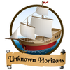
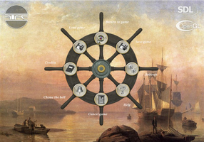
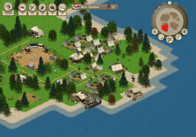

Unknown Horizons
Dieser Artikel wurde für die folgenden Ubuntu-Versionen getestet:
Ubuntu 16.04 Xenial Xerus
Ubuntu 14.04 Trusty Tahr
Zum Verständnis dieses Artikels sind folgende Seiten hilfreich:

Unknown Horizons  (ehemals OpenAnno) ist ein 2D Echtzeitstrategiespiel, in dem es darum geht, eine Zivilisation aufzubauen. Man übernimmt als erstes mit dem Schiff eine Insel und besiedelt sie. Wie von anderen Strategiespielen bekannt, errichtet man verschiedene Gebäude, um die Bevölkerung zu versorgen (z.B. Wohnhäuser, Holzfällerhütten oder Farmen). Wenn die Einwohner zufrieden sind, steigen sie in der Zivilisationsstufe auf. Zusätzlich bietet das Spiel eine Multiplayer-Funktion. Außerdem werden in einem Tutorial die grundlegenden Spielabläufe für Einsteiger erklärt.
(ehemals OpenAnno) ist ein 2D Echtzeitstrategiespiel, in dem es darum geht, eine Zivilisation aufzubauen. Man übernimmt als erstes mit dem Schiff eine Insel und besiedelt sie. Wie von anderen Strategiespielen bekannt, errichtet man verschiedene Gebäude, um die Bevölkerung zu versorgen (z.B. Wohnhäuser, Holzfällerhütten oder Farmen). Wenn die Einwohner zufrieden sind, steigen sie in der Zivilisationsstufe auf. Zusätzlich bietet das Spiel eine Multiplayer-Funktion. Außerdem werden in einem Tutorial die grundlegenden Spielabläufe für Einsteiger erklärt.
Das Spiel befindet sich noch in der Entwicklung. Daher kann Unknown Horizons einige Fehler enthalten, dennoch ist es in der aktuellen Version spielbar.
|  |  |
| Hauptmenü | Spielszene |
Installation¶
Eine etwas ältere Unknown Horizons ist seit Ubuntu 12.04 in den Paketquellen vorhanden und lässt sich über die Paketverwaltung installieren [1]:
unknown-horizons
 mit apturl
mit apturl
Paketliste zum Kopieren:
sudo apt-get install unknown-horizons
sudo aptitude install unknown-horizons
Nun ist Unknown Horizons im Menü unter "Anwendungen → Spiele → Unknown Horizons" verfügbar. Falls gewünscht, kann in den Einstellungen die deutsche Übersetzung ausgewählt werden.
Spielen & bedienen¶
Einzelspieler¶
Wählt man im Hauptmenü "Einzelspieler", hat man die Auswahl zwischen Szenarien ("Scenario"), einer zufälligen Karte ("Random map") und einem freien Spiel ("Free play"). Über "Scenario → Tutorial_de" kann ein deutsches Tutorial gestartet werden. Darin wird man mit Erläuterungen und Hinweisen durch die ersten Spielphasen begleitet. Ist man schon mit der Spielsteuerung vertraut, kann man mit einem freien Spiel ohne spezielles Ziel beginnen.
Die Sicht kann mit der Maus oder den Pfeiltasten geschwenkt werden. Zu Beginn besitzt man nur ein Schiff. Man wählt es mit  (Linksklick) an und durch
(Linksklick) an und durch  (Rechtsklick) auf der Landkarte kann das Schiff zu einem beliebigen Punkt navigiert werden. Hat man eine Insel erreicht, wählt man im Schiffsmenü den Anker, um ein Kontor auf einer Insel zu errichten. Anschließend sollten grundlegende Gebäude (Holzfällerhütte, Fischerhütte und Jäger) errichtet werden, indem man oben rechts im Kreismenü den Hammer anklickt und das gewünschte Gebäude auswählt. Danach sollte man Zelte für die ersten Einwohner errichten. Erfüllt man die Bedürfnisse seiner Einwohner, die man sich durch auf ein Zelt anzeigen lassen kann, steigen diese zur nächsten Zivilisationsstufe auf. Hierdurch werden neue Gebäude freigeschaltet. Möchte man Handel treiben, sollte ein Signalfeuer gebaut werden. Im Anschluss daran kann man im Kontor die gewünschten Waren zum Kauf oder Verkauf anbieten. Mehr Erklärungen finden sich im oben angesprochenen Tutorial.
(Rechtsklick) auf der Landkarte kann das Schiff zu einem beliebigen Punkt navigiert werden. Hat man eine Insel erreicht, wählt man im Schiffsmenü den Anker, um ein Kontor auf einer Insel zu errichten. Anschließend sollten grundlegende Gebäude (Holzfällerhütte, Fischerhütte und Jäger) errichtet werden, indem man oben rechts im Kreismenü den Hammer anklickt und das gewünschte Gebäude auswählt. Danach sollte man Zelte für die ersten Einwohner errichten. Erfüllt man die Bedürfnisse seiner Einwohner, die man sich durch auf ein Zelt anzeigen lassen kann, steigen diese zur nächsten Zivilisationsstufe auf. Hierdurch werden neue Gebäude freigeschaltet. Möchte man Handel treiben, sollte ein Signalfeuer gebaut werden. Im Anschluss daran kann man im Kontor die gewünschten Waren zum Kauf oder Verkauf anbieten. Mehr Erklärungen finden sich im oben angesprochenen Tutorial.
Multiplayer¶
Im Multiplayermodus kann man über das Netzwerk gegeneinander spielen, jedoch ist der Mehrspielermodus wie das komplette Spiel noch in der Entwicklung und es kann zu unerwarteten Fehlern kommen.
Zum Starten eines Netzwerkspiels wählt man im Hauptmenü "Multiplayer" und wählt auf der linken Seite den gewünschten Namen und Farbe. Danach klickt man auf "Apply" und "Create Game". Im nächsten Schritt wählt man das Spielerlimit und die gewünschte Karte. Somit hat man einen Server erstellt. An einem anderen PC im Netzwerk sollte dieser Server nun in der entsprechenden Liste auftauchen. Sobald genug Spieler vorhanden sind, startet das Spiel.
Hinweis:
Alle Spieler, die an einem gemeinsamen Netzwerkspiel teilnehmen möchten, benötigen die exakt gleiche Version von Unknown Horizons.
Sprache¶
Über "Settings" kann die Sprache eingestellt werden. An manchen Stellen kann es vorkommen, dass die deutsche Übersetzung noch nicht vollständig ist und einige Texte im Spiel auf Englisch erscheinen.
Problemlösungen¶
Update¶
Startet das Spiel nach einem Update nicht mehr kann es helfen den versteckten Ordner ~/.unknown-horizons im Homeverzeichnis zu löschen. Dabei gehen aber die Spielstände verloren.

Infobox¶
| Unknown Horizons | |
| Genre: | Echtzeitstrategie |
| Sprache: | ,  , u.a. , u.a. |
| Veröffentlichung: | 2011+ |
| Systemvoraussetzungen | mind. 2 GHz, weitere Informationen auf der Projektseite |
| Medien: | Download |
| Lizenz: | Open Source (GPL) |
| Multiplayer: | Ja, über LAN und Internet |
| Verfügbar für | Linux, Windows, OS X |
| Läuft mit: | nativ |
- Erstellt mit Inyoka
-
 2004 – 2017 ubuntuusers.de • Einige Rechte vorbehalten
2004 – 2017 ubuntuusers.de • Einige Rechte vorbehalten
Lizenz • Kontakt • Datenschutz • Impressum • Serverstatus -
Serverhousing gespendet von